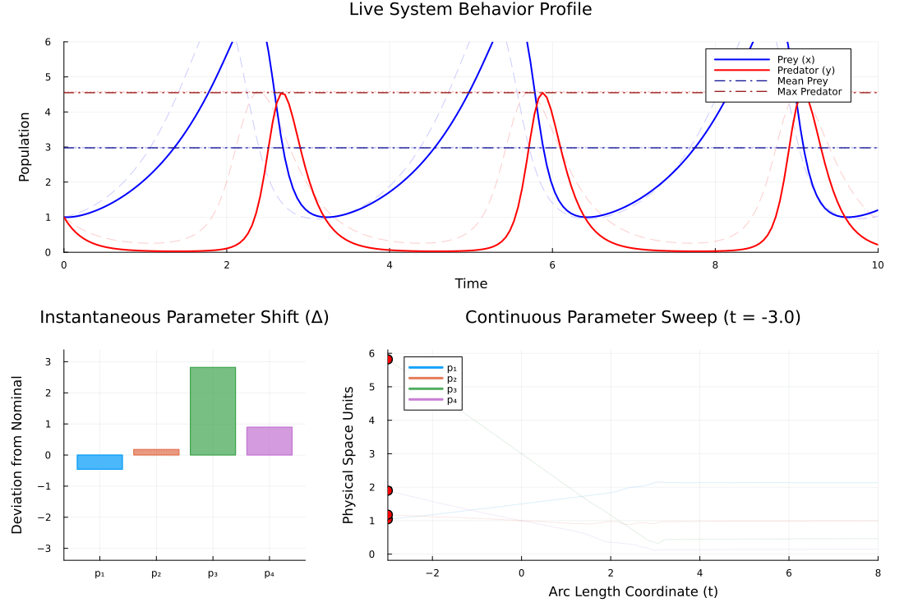

ENV["GKSwstype"] = "100";Basic Lotka-Volterra System
This example introduces a more robust way to initialize the MDC direction. Instead of making a lucky guess, we compute the local Hessian of the cost function at the nominal parameters. The eigenvector corresponding to the smallest eigenvalue gives us the direction of least resistance (the most unidentifiable direction).
We also move away from matching raw trajectories and instead match structural features of the system: the mean prey population and the maximum predator population.
using LinearAlgebra, OrdinaryDiffEq, MinimallyDisruptiveCurves, Statistics, Plots, ForwardDiff, LaTeXStringsWhich eigenvector (direction) to explore along the manifold. They tend to be iteratively more disruptive.
which_dir = 11Simulator (Lotka-Volterra)
function lotka_volterra_dynamics!(du, u, p, t)
du[1] = p[1] * u[1] - p[2] * u[1] * u[2]
du[2] = -p[3] * u[2] + p[4] * u[1] * u[2]
return nothing
end
u0 = [1.0, 1.0]
tspan = (0.0, 10.0)
p_nominal = [1.5, 1.0, 3.0, 1.0]
nom_prob = ODEProblem(lotka_volterra_dynamics!, u0, tspan, p_nominal)
#Helper for evaluations
solve_at_p(p) = solve(remake(nom_prob; p = p), Tsit5())solve_at_p (generic function with 1 method)Objective Features & Cost Framework
Here we extract features from the simulation: the mean of the prey and the max of the predator.
function extract_features(p)
sol = solve_at_p(p)
grid = range(0.0, 10.0, length = 200)
mean_prey = mean(sol(t)[1] for t in grid)
max_predator = maximum(sol(t)[2] for t in grid)
return [mean_prey, max_predator]
end
nom_features = extract_features(p_nominal)
function loss(p)
p_features = extract_features(p)
return sum(abs2, p_features .- nom_features)
end
function loss_grad!(g, p)
ForwardDiff.gradient!(g, loss, p)
return g
end
core_cost = CostFunction(loss, loss_grad!)CostFunction{typeof(Main.loss), typeof(Main.loss_grad!), Nothing}(Main.loss, Main.loss_grad!, nothing)Execution Pipeline
Compute the local Hessian at nominal parameters to discover insensitive directions.
println("--- Setting up Lotka-Volterra MDC System ---")
hess0 = ForwardDiff.hessian(loss, p_nominal)
eigen_decomposition = eigen(hess0)
init_dir = eigen_decomposition.vectors[:, which_dir]
sys = MDCProblem(
core_cost,
p_nominal,
init_dir,
1.0;
names = [:p₁, :p₂, :p₃, :p₄]
)
println("Launching MDC integration...")
mdc_curves = MDCSolve(sys, span = MDCSpan(-3.0, 8.0))Minimally Disruptive Curve (MDCSolution)
====================================
• Parameter Dimensions : 4
• Explored Span : [-3.0 ↔ 8.0] (Arc length)
• Initial Cost (C₀) : 0.0
• Total Energy (H) : 1.0
• Max Parameter Shifts :
p₁ : [1.043 ↔ 2.134]
p₂ : [1.178 ↔ 0.994]
p₃ : [5.819 ↔ 0.463]
p₄ : [1.896 ↔ 0.147]
Animation Pipeline Integration
println("\nPreparing MDC animation...")
#Define the live sandbox rendering function
function lotka_volterra_sandbox_painter(θ_physical)
plot_t_grid = range(tspan[1], tspan[2], length = 200)
sol_nominal = solve_at_p(p_nominal)
sol_perturbed = solve_at_p(θ_physical)
states_nom = [sol_nominal(t_val) for t_val in plot_t_grid]
states_pert = [sol_perturbed(t_val) for t_val in plot_t_grid]
prey_nominal = [u[1] for u in states_nom]
pred_nominal = [u[2] for u in states_nom]
prey_perturbed = [u[1] for u in states_pert]
pred_perturbed = [u[2] for u in states_pert]
mean_prey_nom = mean(prey_nominal)
mean_prey_pert = mean(prey_perturbed)
max_pred_nom = maximum(pred_nominal)
max_pred_pert = maximum(pred_perturbed)
Plots.plot!(
plot_t_grid, [prey_nominal pred_nominal],
subplot = 1,
linealpha = 0.2, linestyle = :dash,
color = [:blue :red], label = false
)
Plots.plot!(
plot_t_grid, [prey_perturbed pred_perturbed],
subplot = 1,
linewidth = 2,
color = [:blue :red], label = ["Prey (x)" "Predator (y)"],
legend = :topright
)
Plots.hline!([mean_prey_nom], subplot = 1, linestyle = :dot, linealpha = 0.4, color = :blue, label = false)
Plots.hline!([max_pred_nom], subplot = 1, linestyle = :dot, linealpha = 0.4, color = :red, label = false)
Plots.hline!([mean_prey_pert], subplot = 1, linestyle = :dashdot, linewidth = 1.2, color = :darkblue, label = "Mean Prey")
Plots.hline!([max_pred_pert], subplot = 1, linestyle = :dashdot, linewidth = 1.2, color = :darkred, label = "Max Predator")
return Plots.plot!(
subplot = 1,
xlabel = "Time", ylabel = "Population",
xlims = tspan,
ylims = (0.0, 6.0)
)
end
#Invoke the updated linear animation tracking utility function
lv_animation = MinimallyDisruptiveCurves.animate_mdc(
mdc_curves,
lotka_volterra_sandbox_painter;
fps = 20,
density = 150,
raw = true
)
output_path = joinpath(pwd(), "lotka_volterra_mdc.gif")
println("Rendering frames and saving video to: $output_path")
Plots.gif(lv_animation, output_path);
Preparing MDC animation...
Rendering frames and saving video to: /home/runner/_work/MinimallyDisruptiveCurves.jl/MinimallyDisruptiveCurves.jl/docs/build/examples/lotka_volterra_mdc.gif
[ Info: Saved animation to /home/runner/_work/MinimallyDisruptiveCurves.jl/MinimallyDisruptiveCurves.jl/docs/build/examples/lotka_volterra_mdc.gif
This page was generated using Literate.jl.